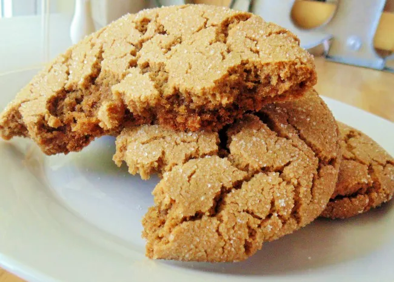

Soft Ginger Cookies

Description
Subtly spiced and full of festive flavor, you'll come back to these gingerbread cookies year after year.
Ingredients
- 2 tablespoons white sugar
- 2 1/4 cups all-purpose flour
- 2 teaspoons ground ginger
- 1 teaspoon baking soda
- 3/4 teaspoon ground cinnamon
- 1/2 teaspoon ground cloves
- 1/4 teaspoon salt
- 3/4 cup softened margarine
- 1 cup white sugar
- 1 large egg
- 1/4 cup molasses
- 1 tablespoon water
Steps
- Preheat the oven to 350 degrees F (175 degrees C). Set aside 2 tablespoons sugar in a small bowl.
- Sift together flour, ginger, baking soda, cinnamon, cloves, and salt in a bowl.
- Cream margarine and remaining 1 cup sugar in a large bowl until light and fluffy.
Beat in egg, then stir in molasses and water. Gradually stir the sifted ingredients into the molasses mixture until well combined.
- Use floured hands to shape dough into 24 walnut-sized balls. Roll each ball in the reserved sugar until coated.
Place cookies 2 inches apart onto ungreased cookie sheets, and flatten slightly with the bottom of a glass.
- Bake in the preheated oven for 8 to 10 minutes, switching racks halfway through.
- Remove from the oven and allow cookies to cool on the baking sheets for 5 minutes, then transfer to a wire rack to cool completely.